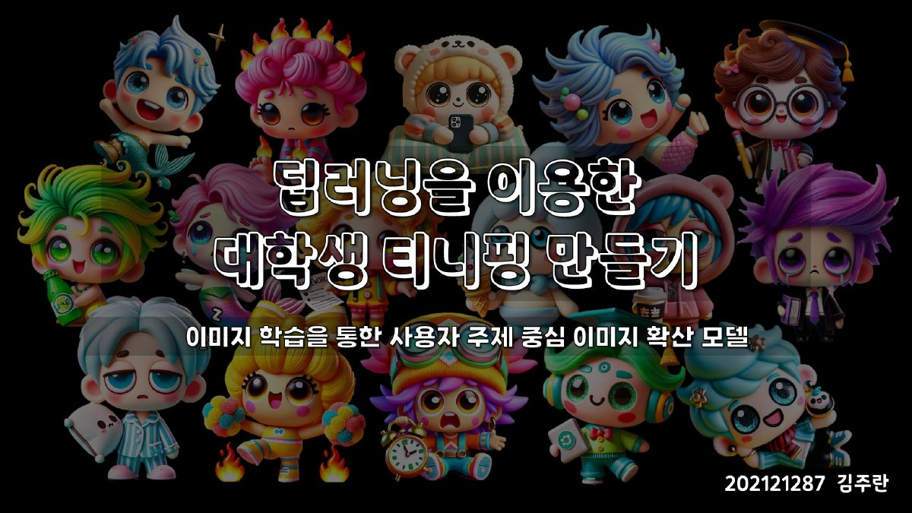

2024 · DreamBooth · 개인화 이미지 생성
대학생 ‘티니핑’ 만들기
애니메이션 ‘티니핑’ 약 140종의 이미지를 학습해, 이름과 특징만 넣으면 같은 화풍의 새 캐릭터를 그려 주는 개인화 이미지 생성 모델을 만들었습니다.

‘OO핑’이라는 이름과 특징을 입력하면 같은 세계관의 캐릭터를 그려 주는 모델을 목표로 한 개인 연구 프로젝트입니다. 대학생이 공감할 수 있는 ‘대학생 티니핑’ 16종을 결과물로 정했습니다.
방법 · 1기부터 5기까지 약 140종의 캐릭터 이미지를 모아 DreamBooth로 확산 모델을 미세 조정했습니다. GPT-4로 대학 생활을 반영한 캐릭터 60종의 이름·성격·대사를 기획한 뒤 16종을 골라, 각 캐릭터의 특징을 프롬프트로 넣어 이미지를 생성하고 가장 잘 맞는 결과를 골랐습니다. 학습과 생성은 Colab에서 진행했습니다.
결과 · 종강핑, 밤샘핑, 미룬핑, 연구핑, 졸업핑, 팀플핑 등 16종을 같은 화풍으로 일관되게 만들어 냈습니다. 적은 데이터로 특정 화풍을 학습시켜 원하는 주제의 캐릭터를 뽑아내는 개인화 생성 모델을 직접 다뤄 본 작업입니다.